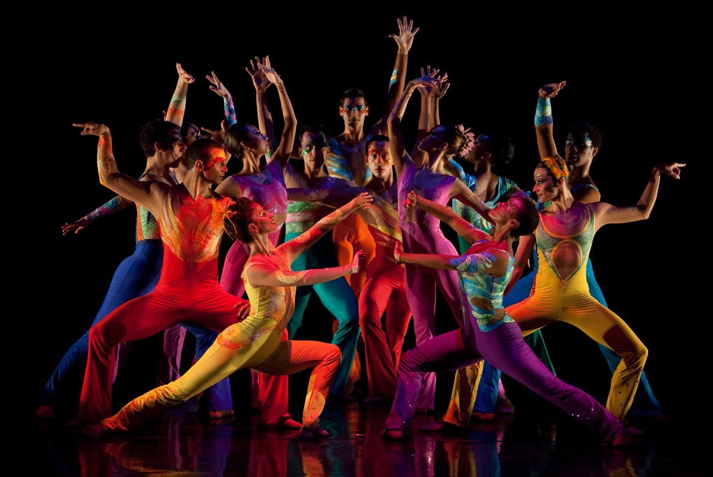

Performance and participation

Theatrical dance, also called performance or concert dance, is intended primarily as a spectacle, usually a performance upon a stage by virtuoso dancers. It often tells a story, perhaps using mime, costume and scenery, or else it may simply interpret the musical accompaniment, which is often specially composed. Examples are western ballet and modern dance, Classical Indian dance and Chinese and Japanese song and dance dramas. Most classical forms are centred upon dance alone, but performance dance may also appear in opera and other forms of musical theatre.
Dance and music
Dance is generally, though not exclusively, performed with the accompaniment of music and may or may not be performed in time to such music. Some dance (such as tap dance) may provide its own audible accompaniment in place of (or in addition to) music. Many early forms of music and dance were created for each other and are frequently performed together. Notable examples of traditional dance/music couplings include the jig, waltz, tango, disco, and salsa. Some musical genres have a parallel dance form such as baroque music and baroque dance; other varieties of dance and music may share nomenclature but developed separately, such as classical music and classical ballet.Dance and rhythm
Rhythm and dance are deeply linked in history and practice. The American dancer Ted Shawn wrote; "The conception of rhythm which underlies all studies of the dance is something about which we could talk forever, and still not finish." A musical rhythm requires two main elements; first, a regularly-repeating pulse (also called the "beat" or "tactus") that establishes the tempo and, second, a pattern of accents and rests that establishes the character of the metre or basic rhythmic pattern. The basic pulse is roughly equal in duration to a simple step or gesture.
Just as musical rhythms are defined by a pattern of strong and weak beats, so repetitive body movements often depends on alternating "strong" and "weak" muscular movements. Given this alternation of left-right, of forward-backward and rise-fall, along with the bilateral symmetry of the human body, it is natural that many dances and much music are in duple and quadruple meter. However, since some such movements require more time in one phase than the other – such as the longer time required to lift a hammer than to strike – some dance rhythms fall equally naturally into triple metre. Occasionally, as in the folk dances of the Balkans, dance traditions depend heavily on more complex rhythms. Further, complex dances composed of a fixed sequence of steps always require phrases and melodies of a certain fixed length to accompany that sequence.
Just as musical rhythms are defined by a pattern of strong and weak beats, so repetitive body movements often depends on alternating "strong" and "weak" muscular movements. Given this alternation of left-right, of forward-backward and rise-fall, along with the bilateral symmetry of the human body, it is natural that many dances and much music are in duple and quadruple meter. However, since some such movements require more time in one phase than the other – such as the longer time required to lift a hammer than to strike – some dance rhythms fall equally naturally into triple metre. Occasionally, as in the folk dances of the Balkans, dance traditions depend heavily on more complex rhythms. Further, complex dances composed of a fixed sequence of steps always require phrases and melodies of a certain fixed length to accompany that sequence.
Approaches to dance

Concert dance
Concert dance, like opera, generally depends for its large-scale form upon a narrative dramatic structure. The movements and gestures of the choreography are primarily intended to mime the personality and aims of the characters and their part in the plot. Such theatrical requirements tend towards longer, freer movements than those usual in non-narrative dance styles. On the other hand, the ballet blanc, developed in the 19th century, allows interludes of rhythmic dance that developed into entirely "plotless" ballets in the 20th century and that allowed fast, rhythmic dance-steps such as those of the petit allegro. A well-known example is The Cygnets' Dance in act two of Swan Lake.
The ballet developed out of courtly dramatic productions of 16th- and 17th-century France and Italy and for some time dancers performed dances developed from those familiar from the musical suite, all of which were defined by definite rhythms closely identified with each dance. These appeared as character dances in the era of romantic nationalism.
Ballet reached widespread vogue in the romantic era, accompanied by a larger orchestra and grander musical conceptions that did not lend themselves easily to rhythmic clarity and by dance that emphasised dramatic mime. A broader concept of rhythm was needed, that which Rudolf Laban terms the "rhythm and shape" of movement that communicates character, emotion and intention, while only certain scenes required the exact synchronisation of step and music essential to other dance styles, so that, to Laban, modern Europeans seemed totally unable to grasp the meaning of "primitive rhythmic movements", a situation that began to change in the 20th century with such productions as Igor Stravinsky's The Rite of Spring with its new rhythmic language evoking primal feelings of a primitive past.
Indian classical dance styles, like ballet, are often in dramatic form, so that there is a similar complementarity between narrative expression and "pure" dance. In this case, however, the two are separately defined, though not always separately performed. The rhythmic elements, which are abstract and technical, are known as nritta. Both this and expressive dance (nritya), though, are closely tied to the rhythmic system (tala). Teachers have adapted the spoken rhythmic mnemonic system called bol to the needs of dancers.
Japanese classical dance-theatre styles such as Kabuki and Noh, like Indian dance-drama, distinguish between narrative and abstract dance productions. The three main categories of kabuki are jidaimono (historical), sewamono (domestic) and shosagoto (dance pieces). Somewhat similarly, Noh distinguishes between Geki Noh, based around the advancement of plot and the narration of action, and Furyu Noh, dance pieces involving acrobatics, stage properties, multiple characters and elaborate stage action.
The ballet developed out of courtly dramatic productions of 16th- and 17th-century France and Italy and for some time dancers performed dances developed from those familiar from the musical suite, all of which were defined by definite rhythms closely identified with each dance. These appeared as character dances in the era of romantic nationalism.
Ballet reached widespread vogue in the romantic era, accompanied by a larger orchestra and grander musical conceptions that did not lend themselves easily to rhythmic clarity and by dance that emphasised dramatic mime. A broader concept of rhythm was needed, that which Rudolf Laban terms the "rhythm and shape" of movement that communicates character, emotion and intention, while only certain scenes required the exact synchronisation of step and music essential to other dance styles, so that, to Laban, modern Europeans seemed totally unable to grasp the meaning of "primitive rhythmic movements", a situation that began to change in the 20th century with such productions as Igor Stravinsky's The Rite of Spring with its new rhythmic language evoking primal feelings of a primitive past.
Indian classical dance styles, like ballet, are often in dramatic form, so that there is a similar complementarity between narrative expression and "pure" dance. In this case, however, the two are separately defined, though not always separately performed. The rhythmic elements, which are abstract and technical, are known as nritta. Both this and expressive dance (nritya), though, are closely tied to the rhythmic system (tala). Teachers have adapted the spoken rhythmic mnemonic system called bol to the needs of dancers.
Japanese classical dance-theatre styles such as Kabuki and Noh, like Indian dance-drama, distinguish between narrative and abstract dance productions. The three main categories of kabuki are jidaimono (historical), sewamono (domestic) and shosagoto (dance pieces). Somewhat similarly, Noh distinguishes between Geki Noh, based around the advancement of plot and the narration of action, and Furyu Noh, dance pieces involving acrobatics, stage properties, multiple characters and elaborate stage action.
Participatory and social dance
Social dances, those intended for participation rather than for an audience, may include various forms of mime and narrative, but are typically set much more closely to the rhythmic pattern of music, so that terms like waltz and polka refer as much to musical pieces as to the dance itself. The rhythm of the dancers' feet may even form an essential part of the music, as in tap dance. African dance, for example, is rooted in fixed basic steps, but may also allow a high degree of rhythmic interpretation: the feet or the trunk mark the basic pulse while cross-rhythms are picked up by shoulders, knees, or head, with the best dancers simultaneously giving plastic expression to all the elements of the polyrhythmic pattern.
Cultural traditions
Examples of dances in different countries
| Type | Country |
| Round dance | Russia |
| Hopak | Ukraine |
| Polonaise | Poland |
| Polka | Czech Republic |
| Bolero | Spain |
| Lezginka | Georgia |
Dance education
Dance studies are offered through the arts and humanities programs of many higher education institutions. Some universities offer Bachelor of Arts and higher academic degrees in Dance. A dance study curriculum may encompass a diverse range of courses and topics, including dance practice and performance, choreography, ethnochoreology, kinesiology, dance notation, and dance therapy. Most recently, dance and movement therapy has been integrated in some schools into math lessons for students with learning disabilities, emotional/behavioral disabilities and/or attention deficit hyperactivity disorder (ADHD).
External links
United States National Museum of Dance and Hall of FameUnited States National Museum of Dance and Hall of Fame again